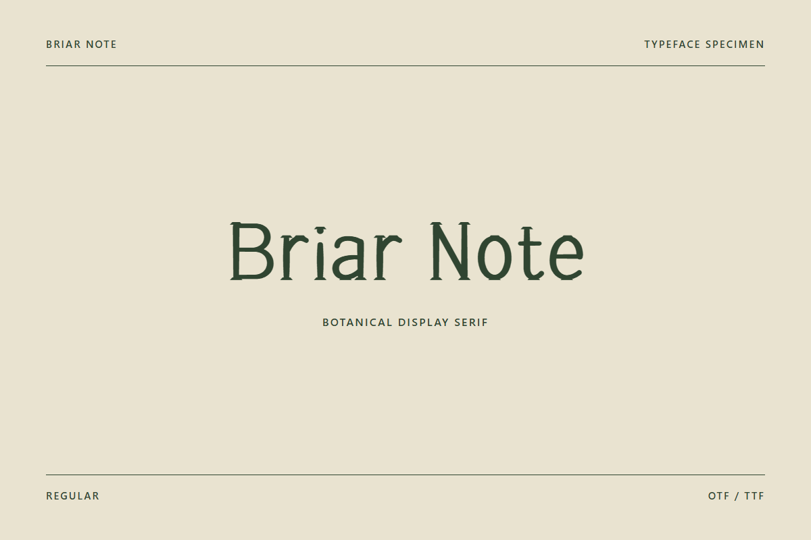
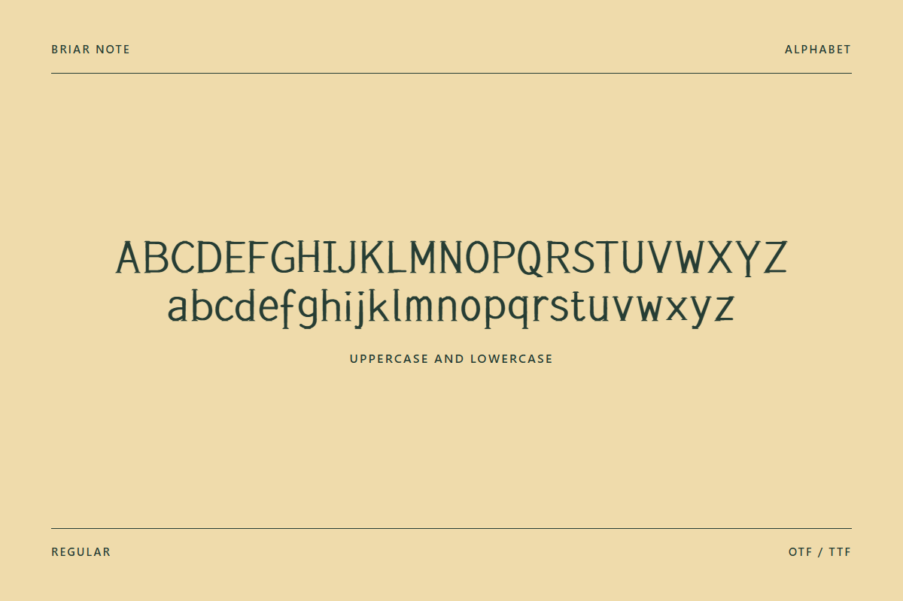
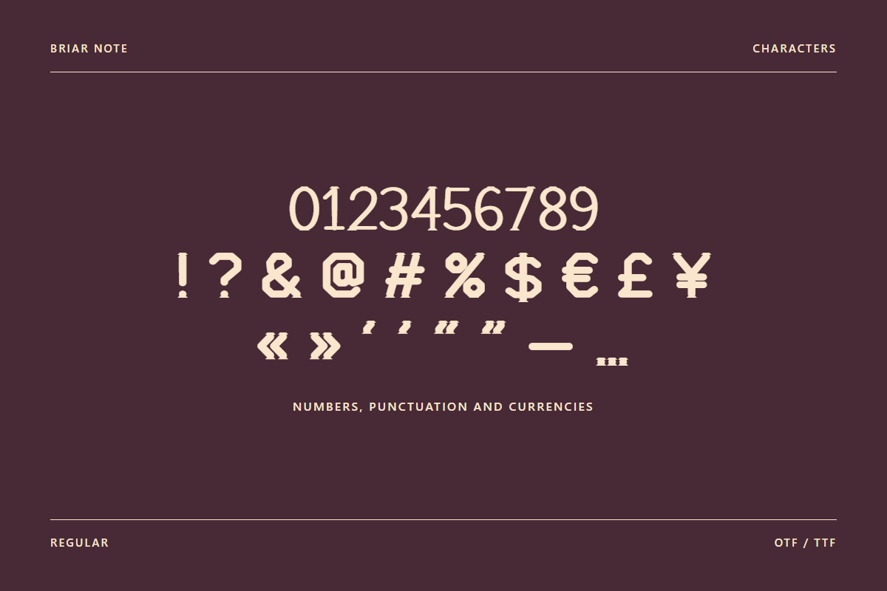
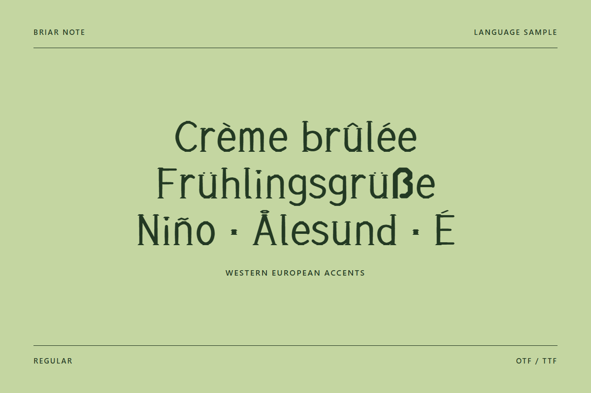
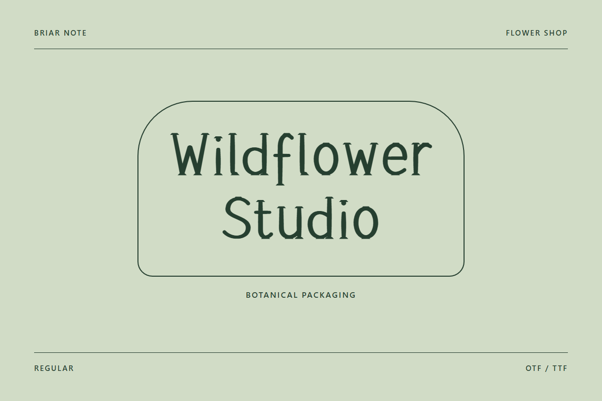
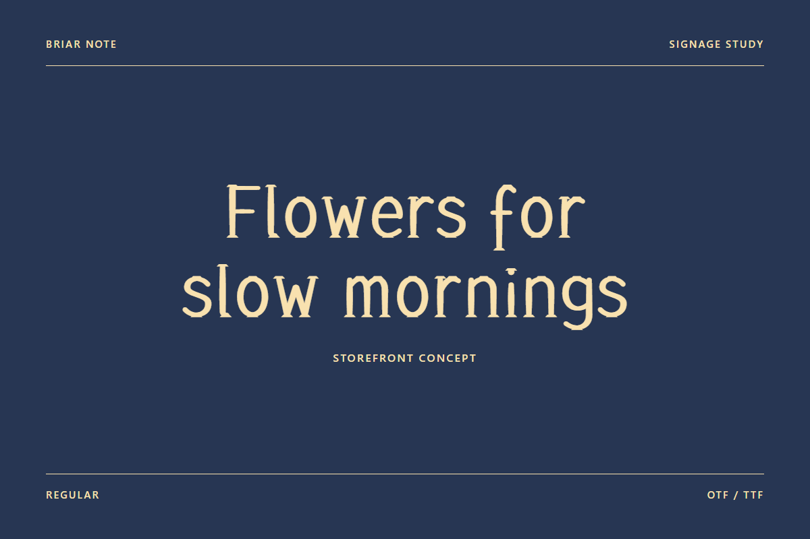
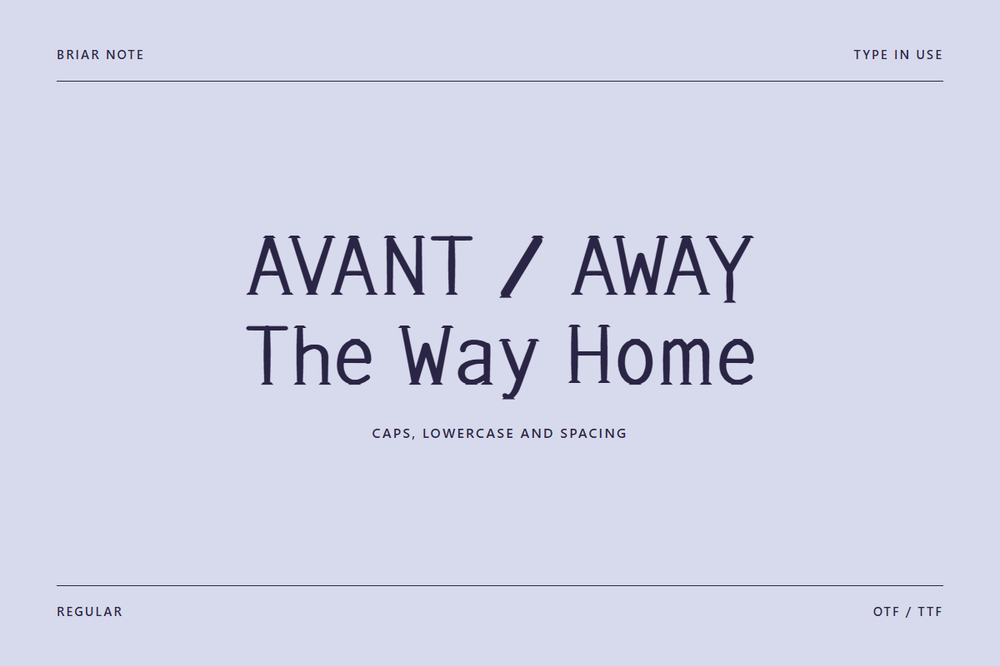
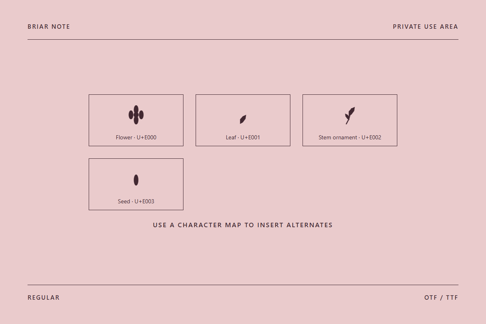

← All typefacesType specimen
Briar Note
A botanical display serif study for flower shop labels and stationery. Includes Latin letters, numerals, Western European accents and four botanical ornaments.







